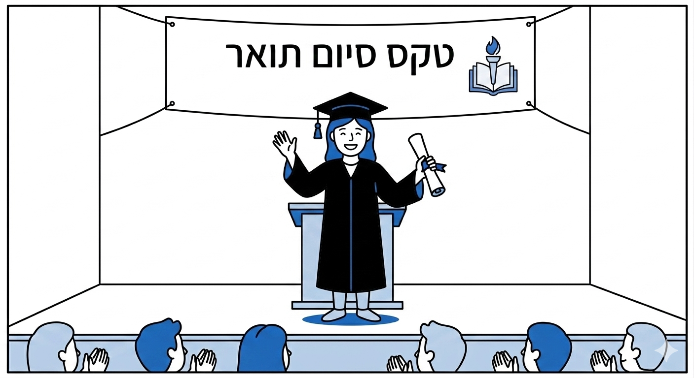
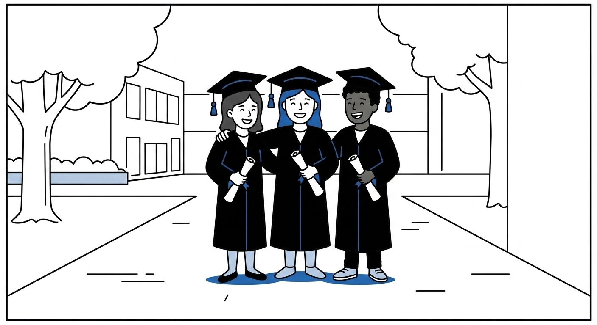
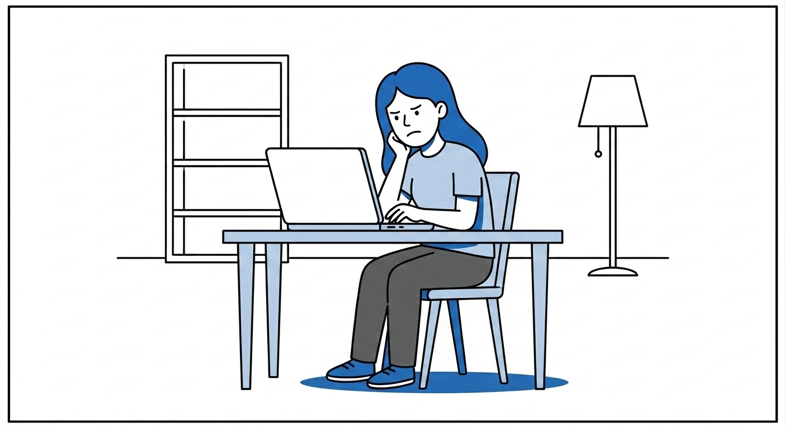
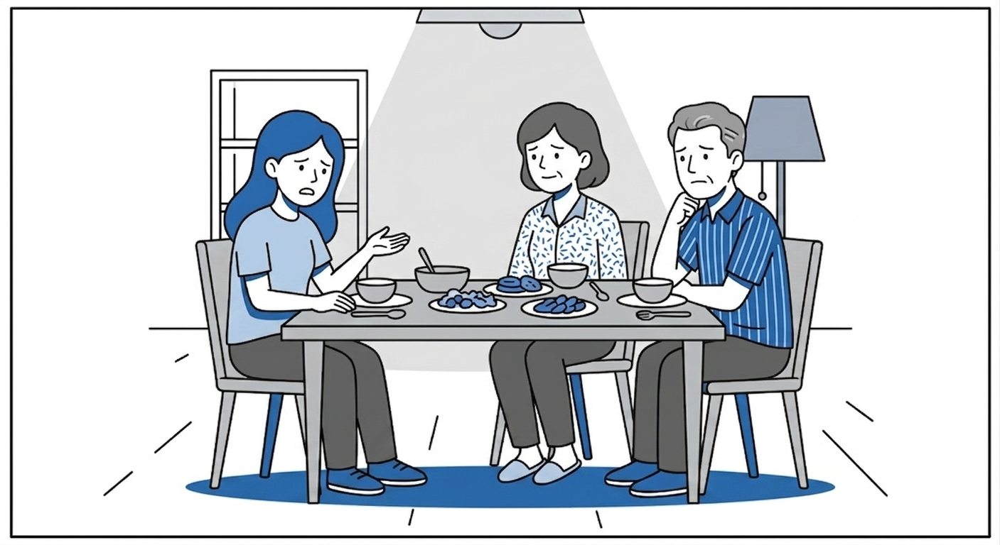

המדריך למציאת עבודות בטכנולוגיות למידה
אם התחלתם לחפש עבודה וגיליתם שהשמות, הדרישות והכלים לא תמיד ברורים, הגעתם למקום הנכון
למה הטיימינג חשוב?למה הטיימינג חשוב?

יאללה, הגיע הזמן לחפש עבודה!

אבל למה כולם דורשים ניסיון? איך אפשר להתחיל לעבוד ככה?

חבל שלא התחלתי לעבוד כבר במהלך התואר, הייתי צוברת ניסיון
מסקנה: צבירת ניסיון כסטודנטים שווה זהב
אבל מאיפה מתחילים? בואו נגלה יחד

סטודנטים משתפים
״הבנתי סוף סוף איך להסביר פרויקט מהלימודים כאילו הוא מוצר אמיתי. זה עזר לי לדבר בביטחון בראיון.״
נוגה, שנה ג׳גם אתם רוצים עזרה מבוגרי התואר?
צרו קשר